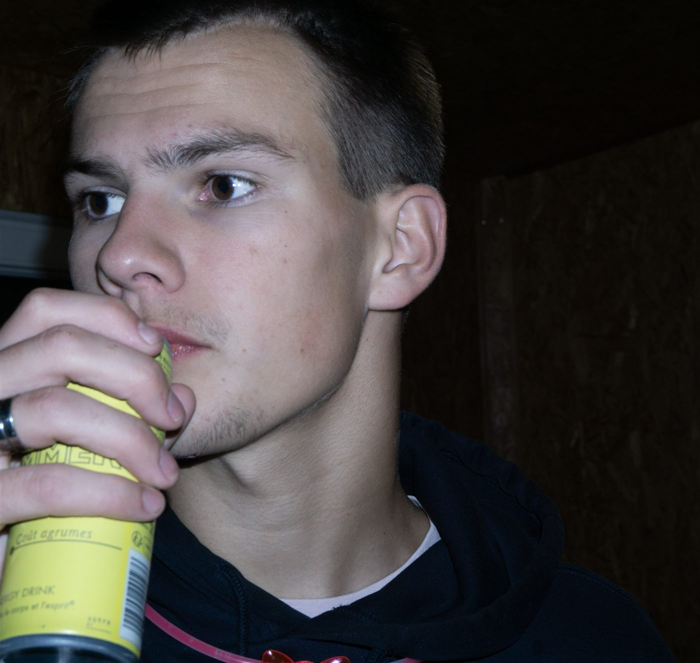
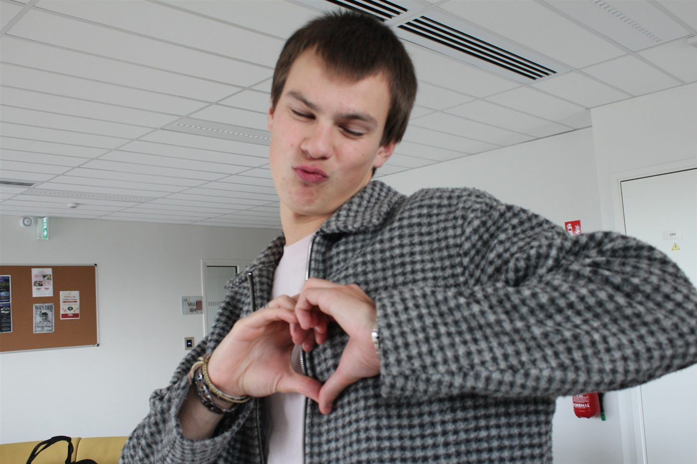

01Président
Loïc Pluvinage.
Le cœur sur la main et la larme jamais très loin : Loïc vit chaque événement à fond, du premier mail au dernier rangement. Toujours partant, une canette à la main, il garde le sourire. Ses cheveux, eux, ont moins bien vécu ses deux années au CESI : ils ont démissionné avant lui.